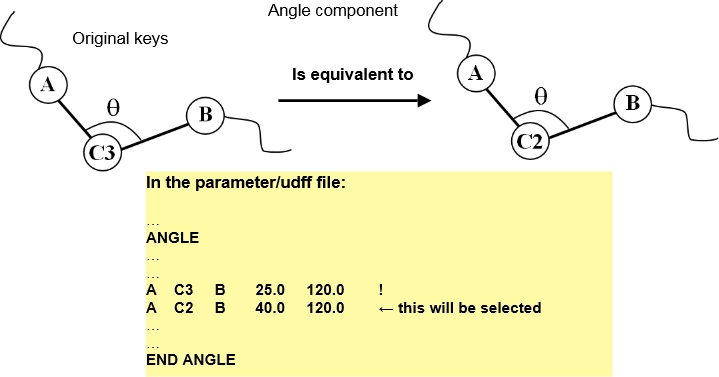

ATOM_KEY equivalence¶
In this page, we are going to look at the directive called EQUIVALENCE, which is defined in the par file, and how it is used to adjust the potential parameter assignments.
Recall that once ATOM_KEYs are assigned to the the atoms, DL_FIELD will look for suitable potential parameters by matching against the ATOM_KEYs for all the interaction (energy) components in the system. In principle, if a new ATOM_KEY is created, you would need to include parameter sets for all possible combinations with the existing ATOM_KEYs for different FF interaction components. This means the number of parameter sets in the par file will grow exponentially as the number of ATOM_KEYs is increased.
Fortunately, the new ATOM_KEY quite often may share some common chemical behaviour with some other existing ATOM_KEYs. Therefore, similar sets of potential parameters can be used that are already defined in the par file. An equivalence statement can be issued to treat the new ATOM_KEY as an equivalent to a different ATOM_KEY when looking for existing parameter sets. However, new parameters would still need to be defined for other energy components that have no equivalence.

Interaction components
Different equivalent ATOM_KEYs can be assigned for different types of interactions by using the interaction components. The various interaction components are shown in the table as follows:
Interaction type |
interaction components |
|---|---|
Bond interaction |
bond_ |
Angle interaction |
angle_ |
Dihedral interaction |
dihedral_ |
Inversion interaction |
inv_ |
Improper interaction |
imp_ |
Shell interaction |
shell_ |
Vdw interactions |
vdw_ |
Three-body interaction |
tbp_ |
Usage format:
EQUIVALENCE
…
…
atom_key > component1_ATOM_KEY1 component2_ ATOM_KEY2 …
…
…
END EQUIVALENCE
where atom_key is made equivalent to ATOM_KEY1 for interaction component1, and is made equivalent to ATOM_KEY2 for interaction component2 and so on.
Examples
Suppose you have an ATOM_KEY C3 and you want to make this ATOM_KEY to become equivalent to ATOM_KEY C2 when DL_FIELD is looking for parameters correspond to the angle component that involves C3. The following equivalence statement can be issued:
C3 > angle_C2
{kind=link}
This means C3 shares the same angle interaction parameters for angles as if it is a C2. You can also make a multi-equivalence statement, as shown below:
C3 > bond_C4 angle_N2 vdw_C’
This means C3 shares the same bond parameters as C4, angle parameters as N2 and Van-der-Waal parameters as C’. Other interaction components (such as the dihedral) for C3 not shown above would still need to be defined.
So far, what we have discussed is called the first-tier equivalence.
Second tier equivalence
If DL_FIELD cannot find matching ATOM_KEYs, it will then look for second-tier equivalence and go through the list for the second time. Diagram below illustrates the seocnd-tier equivalence, which is distinguished from the first one with the suffix ‘2’.
Note
If matching ATOM_KEYs is found in the first attempt, then the second-tier equivalence will be ignore.
{kind=link}
Note
If no second tier atom equivalence being defined, then DL_FIELD will revert back to the original ATOM_KEY, whether the first-tier equivalence atom has been defined or not in the first search attempt.
If no matching ATOM_KEYs can be located after the second attempt, then DL_FIELD will report this and stop execution.
Examples use of first- and second-equivalence statements
Below shows a few example statements how the first and second equivalence can be combined in different ways.
EQUIVALENCE
..
..
CDX > dihedral_CD
CML > angle_CM imp_CM vdw_CM angle2_CM imp2_CM
C5BB > angle2_CA dihedral2_CA imp2_CA
CTNC > bond_CT angle_CT imp_CT vdw_CT bond2_CT angle2_CT imp2_CT dihedral2_CT
..
..
END EQUIVALENCE
CDX: first-tier equivalence for dihedral is CD. No second-tier equivalence is defined and therefore DL_FIELD will revert back to CDX for second search attempt.
CML: first-tier equivalence for angle, improper and vdw is CM. But the second-tier equivalence only applies to angle and improper, which is also CM. However, all other components, including the vdw, the original CML ATOM_KEY is used.
C5BB: The original ATOM_KEY is used during the first search attempt. In the second attempt, angle, dihedral and improper components are made equivalent to CA.
CTNC: The ATOM_KEY is changed to CT for both search attempts. The exception being the dihedral component, which set the atom equivalence to CT only in the second attempt.